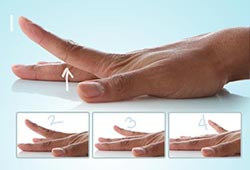

Finger Lift

Use this exercise to help increase the range of motion and flexibility in your fingers.
• Place your hand flat, palm down, on a table or other surface.
• Gently lift one finger at a time off of the table and then lower it.
• You can also lift all your fingers and thumb at once, and then lower.
• Repeat eight to 12 times on each hand